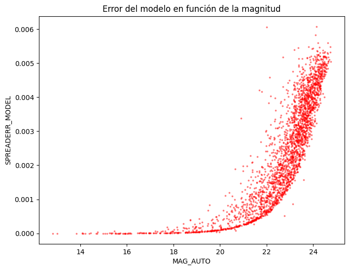

Después de haber generado el modelo del PSF, el siguiente paso es reinyectarlo a SExtractor para medir y obtener parámetros que dependen explícitamente de la forma de la PSF. SExtractor tiene dos enfoques para hacer esto: [1] [2]
-
CLASS_STAR: Este clasificador se basa en una red neuronal multicapa de propagación directa entrenada a traves de aprendizaje supervisado, usa perfil de brillo, FWHM, y pico de intensidad. Funciona bien pero se degrada en el límite de baja SNR -
SPREAD_MODEL: Compara el ajuste de un modelo de fuente puntual contra un modelo ligeramente extendido. Este es el estándar actual precisamente porque requiere del modelo PSF
El estimador SPREAD_MODEL indica cual de los modelos que mejor se ajustan coincide mejor con los datos de a imagen, ya sea el modelo de PSF local remuestreado en la posición actual $\tilde{\phi}$ (representando una fuente puntual) o un modelo remuestreado ligeramente más "borroso" $\tilde{G}$ (representando una galaxia). Aquí $\tilde{G}$ se obtiene convolucionando el modelo de PSF local con un modelo exponencial circular con una longitud de escala $=1/16\ \text{FWHM}$, y remuestreando el resultado en la posición actual en la cuadrícula de píxeles. [1][2]
SPREAD_MODEL se normaliza para que la comparación de fuentes con diferentes PSF sea más práctica y coincidan:
donde $p$ es el vector de imagen centrado en la fuente. $W$ es una matriz de pesos constante a lo largo de la diagonal.
El valor que se obtiene de SPREAD_MODEL nos dice que tipo de fuente es, para fuentes puntuales SPREAD_MODEL toma valores cercanos a cero, positivos para fuentes extendidas y negativo para detecciones más pequeñas que la PSF. Ahora vamos a hacer uso de estos estimadores, como siempre, empezaremos creando un directorio nuevo en donde pondremos todos los elementos que hemos venido ocupando para usar SExtractor pero ahora agregaremos el archivo .psf que nos dió PSFEx y en el archivo de configuración principal de SExtractor vamos a colocar lo siguiente:

Y en el archivo de parámetros vamos a colocar los siguientes parámetros:
CLASS_STAR
SPREAD_MODEL
SPREADERR_MODEL
FLUX_RADIUS
FWHM_IMAGE
MAG_AUTO
MAGERR_AUTO
MAG_PSF
MAGERR_PSF
FLUX_AUTO
FLUXERR_AUTO
MU_MAX
FLAGS
SNR_WINY finalmente corremos SExtractor con el siguiente comando:
$ sex IMAGEN.fits -c pospsfex.sex 
Esto nos genera nuestro catálogo con los parámetros que le solicitamos a SExtractor, vamos a visualizar los datos del catálogo obtenido para la clasificación estrella/galaxia, esto lo haremos empleando Python, vamos a convertir nuestro catálogo FITS_LDAC a un DataFrame con pandas. Luego, revisamos los datos obtenidos con el clasificador SPREAD_MODEL, para ello vamos a determinar un umbral para elegir nuestras estrellas, aquí debemos tomar en cuenta que SPREAD_MODEL tiene una incertidumbre (SPREADERR_MODEL) y no es la misma para todas las mediciones, por ello el umbral será determinado por:
$$|\text{SPREAD_MODEL}|< 0.002 + \text{SPREADERR_MODEL}$$
por ejemplo si tomamos los datos del primer elemento en nuestro DataFrame: Se obtuvo un SPREAD_MODEL: 0.026486, SPREADERR_MODEL: 0.000007, por lo que: $|0.026486|< 0.002 + (0.000007)= 0.002007 \Longrightarrow 0.026486 > 0.002007$, por lo que este primer objeto no es considerado una estrella, vamos a ubicarlo en nuestra imagen:

Al ubicarlo en la imagen podemos darnos cuenta que, efectivamente, el objeto no es una estrella sino una galaxia que parece ser del tipo S0. Ahora vamos a ver la distribución de los datos de SPREAD_MODEL en función de MAG_AUTO.

SPREAD_MODEL en función de MAG_AUTO, las estrellas rondan cerca de 0.
Notemos que existe una clara separación entre estrellas y galaxias (recordemos que para SPREAD_MODEL un valor cercano a 0 significa que es estrella), con las estrellas concentrandose alrededor de SPREAD_MODEL=0 y las galaxias con valores positivos. Para objetos brillantes la separación entre ambas poblaciones es clara; sin embargo, conforme aumenta la magnitud (objetos más débiles) la disperción de SPREAD_MODEL crece como consecuencia de la disminución de la relación señal-ruido.

SPREADERR_MODEL) en función de la magnitud (MAG_AUTO). Para objetos brillantes entre 14 a 18 el error es casi constante, mientras que para objetos más débiles el error empieza a aumentar.
Recordemos que SPREAD_MODEL compara la forma del objeto con la forma esperada de la PSF, cuando una estrella es brillante puede medirse con mucha precisión, mientras que si tenemos una estrella muy débil, el ruido puede modificar algunos valores de los píxeles, por lo que es más difícil saber cual es exactamente su perfil.
Ahora, veamos los datos obtenidos para el clasificador CLASS_STAR, recordemos que este parámetro toma un valor de 0 para objetos que parecen ser como una galaxia y 1 si es una estrella. De igual forma que con el modelo SPREAD_MODEL, tomaremos un umbral para elegir nuestras estrellas, estre umbral sera: $\text{es_estrella}>0.9$. Tomando el ejemplo anterior, el primer elemento del catálogo tiene un valor de CLASS_STAR=0.028627, tiene un valor cercano a 0 por lo que se considera una galaxia y como ya vimos, si es una galaxia.

CLASS_STAR en función de la magnitud, tomando estrellas para valores mayores a 0.9 y galaxias para valores menores a 0.05
De esta grafica podemos notar algo similar que usando SPREAD_MODEL, para objetos brillantes las estrellas presentan valores cercanos a 1, mientras que las galaxias se concentran al rededor de 0; sin embrago, conforme aumenta la magnitud y los objetos se vuelven más débiles, la relación señal-ruido disminuye y la red neuronal de SExtractor asigna valores cada vez más intermedios, como resultado crece el número de objetos cuya clasificación es ambigua.